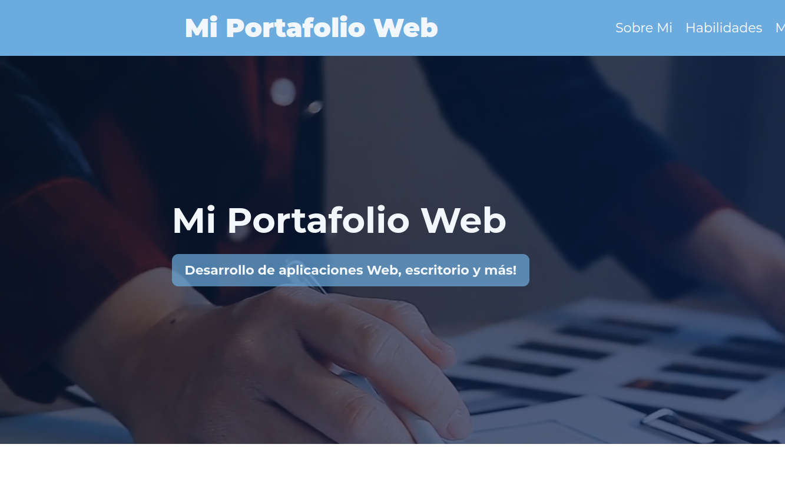

Mis Proyectos
Boletín de Egresos Hospitalarios
Hospital de Copiapó (2015)
Sistema utilizado para el registro de los boletines de egresos hospitalarios.
|
Centro de Diagnóstico Terapéutico
Hospital de Copiapó (2014)
Sistema utilizado para el registro de las atenciones en los policlínicos.
|
Unidad de Paciente Crítico
Hospital de Copiapó (2012)
Utilizado en la unidades de Cuidados Intensivos, Tratamiento Intensivo y Cuidados Especiales.
|
Unidad de Anatomía Patológica
Hospital de Copiapó (2013)
Gestión de Biopsias, Citologías y Laboratorio clínico.
|

App Registro Notas
Personal (2019)
Aplicación de uso personal para el registro de anotaciones organizadas por categorías y subcategorías.
|
App Registro Series
Personal (2020)
Aplicación de uso personal para el registro de Series de TV para mantener un orden de las series vistas, por ver y terminadas.
|
Terranet
Terraservice (2020)
Intranet de la empresa, utilizada para mantener reportes de perforación, incidentes de seguridad, además incluye un repositorio de documentos y utilidades como un constructor de firmas para el correo electrónico.
|
Reserva de Horas
Centro Médico (2016)
Reserva online de exámenes de radiología con la posibilidad de adjuntar la orden médica.
|
Logs
Personal (2021)
Aplicación de uso personal para obtener registro (Log) de la actividad del uso de las aplicaciones Web con la característica de obtener la ubicación de las conexiones.
|

Portafolio
Personal (2024)
Portafolio de proyectos personales y laborales.
|